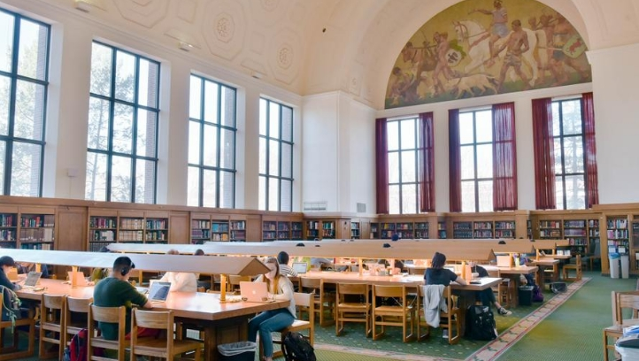
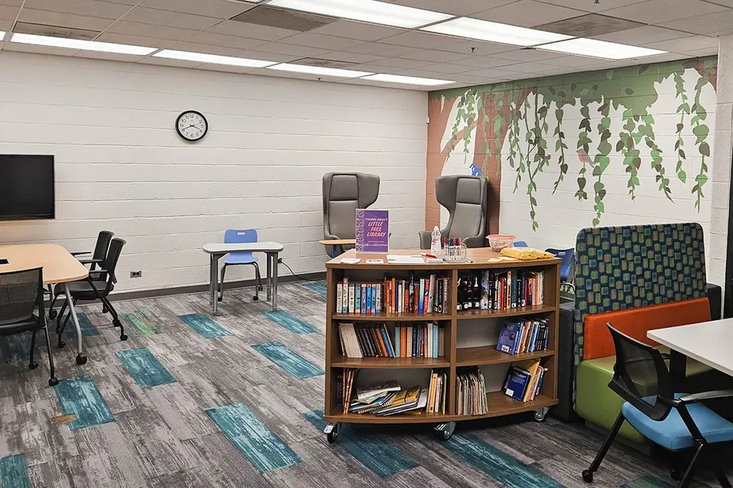

Basic Needs and Study Spaces
UMSI is committed to ensuring that students have access to essential resources and supportive environments that promote both academic success and personal well-being. Explore the options below for finding support and creating productive study environments.
Food Pantry
The Maize and Blue Cupboard provides students with access to healthy, nutritious food and other essential resources. The pantry is free to use for all UM students and is a safe and inclusive environment.
Visit Maize and Blue CupboardEmergency Financial Assistance

Students facing unexpected financial challenges can apply for emergency funding to cover essential needs. Learn more about the available resources and how to apply for assistance.
Get Financial AssistanceHealth and Wellness Support
Our campus provides comprehensive health and wellness support, including counseling, medical care, and wellness coaching. Ensure your physical and mental well-being during your studies.

On-Campus Study Spaces
Looking for a quiet or collaborative space to study? UM offers a variety of study spaces across campus that cater to different needs, from silent study zones to group project areas.
Find Study SpacesLibrary Study Rooms
Reserve a private or group study room at one of our libraries. These rooms are perfect for focused study sessions, group meetings, and project work, providing a distraction-free environment.
Reserve a Study Room24/7 Study Areas
Need to study late at night or early in the morning? Check out our list of 24/7 study areas that offer flexible hours to accommodate your study schedule, ensuring you have a place to focus whenever needed.
View 24/7 Study Areas